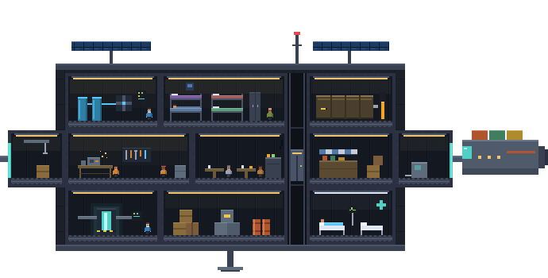
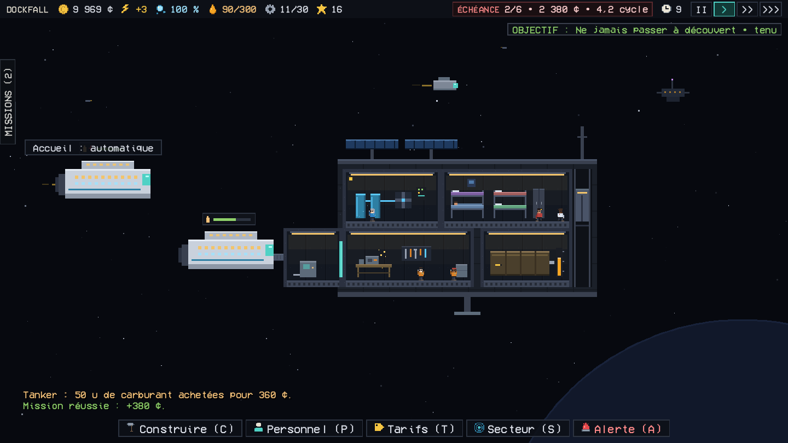
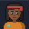

DOCKFALL
DOCKFALLGestion • roguelite • pixel art • Windows
Une station.
Une dette.
Un record à battre.
Tu reprends le Relais, une station de ravitaillement perdue dans la ceinture, et la dette qui va avec. Fais le plein des vaisseaux, répare leurs coques, garde ton équipage en vie et paie la Compagnie. Rachète la station au bout de six échéances, puis continue en propriétaire : le but, c'est le plus gros score.
ÉCHÉANCE 1/6 • 2 000 ¢ • 7,0 cycles


Ce que tu fais au Relais
Vendre à prix juste
Chaque vaisseau paie l'amarrage, le carburant, les réparations, le commerce et les soins au prix que tu fixes, au crédit près. Trop cher, il file chez Vega, le comptoir d'en face. Pas assez cher, tu travailles pour rien.
Construire et améliorer
Quais, atelier, recycleur d'oxygène, quartiers, marché, poste de sécurité, réacteur… Agrandis la station étage par étage et monte chaque module jusqu'au niveau 3. Garde un œil sur l'énergie : en déficit, des modules s'éteignent.
Tenir une équipe
Humains, Velkans, Ossarites, Thuuls : chacun a un métier, un caractère et une rareté, du commun au légendaire. Ils se fatiguent, perdent le moral et se laissent parfois débaucher par Vega.
Encaisser les coups
Un incendie gagne l'atelier, trois pirates montent à bord, un inspecteur fouille tes cales. Tu envoies l'équipe, tu sonnes l'alerte, tu négocies. Et entre deux crises, Vasko Hale vient prendre des nouvelles de ta caisse.
« Chaque station finit par tomber. La vôtre peut choisir quand. »Vasko Hale • la Compagnie
Ceux que tu croiseras





Télécharger
Dockfall pour Windows
Le jeu tient dans un seul fichier, sans installation. Ta partie est sauvegardée à chaque fin de cycle et quand tu quittes.
- Version
- Prototype 0.12
- Système
- Windows 10 ou 11, 64 bits
- Fichier
- Dockfall-windows.zip • environ 50 Mo
- Langue
- Français, anglais
- Prix
- Gratuit
Installer et lancer
- Décompresse l'archive où tu veux (clic droit, Extraire tout).
- Lance
Dockfall.exe. - Si Windows affiche « Windows a protégé votre ordinateur », clique sur Informations complémentaires puis Exécuter quand même. Le jeu n'est pas encore signé, d'où l'avertissement.
- Choisis Nouvelle concession. Le tutoriel t'accompagne pendant la première partie.
Sauvegarde et réglages : %APPDATA%\Godot\app_userdata\Dockfall. Supprime ce dossier pour repartir de zéro (licences et succès compris).
Vie privée : en fin de partie, le jeu envoie des chiffres anonymes (durée, cause de fin, version) pour aider à l'équilibrer ; tu peux les couper dans Options. Le classement n'utilise que le pseudo que tu choisis. Aucune donnée personnelle n'est collectée.
Configuration conseillée
| Élément | Minimum |
|---|---|
| Processeur | Double cœur, 2 GHz |
| Mémoire | 2 Go |
| Carte graphique | Compatible Vulkan ou OpenGL 3.3 |
| Écran | 1280 × 720 ou plus (fenêtre ou plein écran avec F11) |
| Espace disque | 150 Mo |
Classement mondial
Les plus longues concessions
La partie la plus longue gagne, en cycles, puis le meilleur score. Chaque joueur garde sa meilleure partie. Pour y figurer, choisis un pseudo dans le jeu (menu Classement, ou en fin de partie) : tes parties terminées sont envoyées toutes seules.
Chargement du classement…
| Rang | Pseudo | Cycles | Score | Secteur | Menace |
|---|
Concession du jour •
Même départ pour tout le monde aujourd’hui (menu « Concession du jour » dans le jeu). Seule la première partie de chaque joueur compte.
Chargement…
| Rang | Pseudo | Cycles | Score | Secteur | Menace |
|---|
Captures
Le Relais en images
Toutes les images viennent du jeu, sans retouche. Clique pour agrandir.
Nouveautés
Journal des versions
0.11 – 0.12
Novembre 2026
- Concession du jour : même départ pour tout le monde, avec son propre classement.
- Histoires d’équipage : surnoms gagnés par les exploits, amitiés, mémorial, et un journal de bord de chaque partie.
- Donner mon avis : depuis le menu pause ou l'écran de fin, écris directement à l'équipe.
- Statistiques anonymes de fin de partie, pour équilibrer le jeu (désactivables dans Options).
0.10
Novembre 2026
- Version anglaise : tout le jeu est traduit. La langue se choisit dans Options ; par défaut, le français si Windows est en français, l'anglais sinon.
0.9
Novembre 2026
- Gains visibles : chaque paiement s'élève au-dessus du quai, en or pour les grosses sommes.
- Courbe de fin de partie : la caisse cycle par cycle, avec les échéances payées et manquées.
0.8
Novembre 2026
- 9 nouvelles licences (19 en tout) : fonds de roulement, bureau de recrutement, avocat, négociateur, carnet d'adresses, urbaniste, vétérans, équipe élargie, sursis.
- 4 défis à choisir avant la partie : Énergie verte, Équipe réduite, Loup solitaire, Caisse vide. Plus de score, et 3 licences à la première réussite.
- La liste des licences de la préparation défile et explique chaque licence.
0.7
Novembre 2026
- Grands projets (touche O) : balise, aile résidentielle, bouclier, chantier naval, siège de la guilde. De gros chantiers à effet permanent, qui rapportent du score.
- Menaces de fin de partie : blocus, grand raid, tempête majeure et offre de rachat de la Compagnie.
0.6
Novembre 2026
- Stations de départ : le Relais, l'Épave (usée mais riche) et l'Avant-poste (militaire), à débloquer avec des licences.
- Conditions de la concession : un atout et un handicap tirés à chaque partie, à retirer une fois.
- Préparation en trois étapes : secteur, station, équipe.
0.5
Novembre 2026
- Voisinage : la place des modules compte. Atelier collé au quai, marché à côté de l'entrepôt, cantine, infirmerie ou recycleur près des quartiers, sécurité près d'un quai : chaque paire donne un bonus. Le réacteur, lui, chauffe ses voisins.
- Pastilles vertes et rouges sur les murs, effets dans la fiche des modules, et aperçu des bonus avant de construire.
- Stats des employés renommées Travail, Forme et Moral, en carrés réguliers.
0.4
Novembre 2026
- Classement mondial : la partie la plus longue gagne. Choisis un pseudo dans le jeu, tes parties terminées sont envoyées toutes seules, et le classement se consulte au menu ou sur ce site.
- Mise à jour automatique : quand une nouvelle version sort, un bouton « Mettre à jour » apparaît au menu. Un clic, et le jeu se télécharge, se vérifie, se remplace et redémarre tout seul. Sauvegarde et licences sont gardées.
- Hors ligne, rien ne change : une partie non envoyée part au lancement suivant.
0.3
Novembre 2026
- Le but, c'est le score. Il s'affiche en direct en haut de l'écran, et l'écran de fin annonce les nouveaux records.
- Mode propriétaire. Après le rachat de la station, la partie continue : une taxe de secteur remplace les échéances, les licences s'achètent avec tes crédits, et tu pars à la retraite quand tu veux.
- Nouvelle touche L pour la boutique de licences.
- Stats des employés : efficacité, endurance et sang-froid, de 1 à 5. La rareté découle de leur total, au lieu d'être tirée au hasard.
- Équipe de départ : toujours un mécanicien, un technicien et un commercial parmi les candidats, et l'équipe choisie doit compter un mécanicien et un technicien.
0.2
Novembre 2026
- Le rachat. Paie la sixième échéance et la station est à toi : score bonus, fanfare.
- Menace 1 à 5. Chaque victoire débloque un niveau de difficulté de plus : échéances plus lourdes, crises plus fréquentes, départ plus pauvre, Vasko plus rancunier, puis une seule échéance manquée et tout est perdu.
- Succès, consultables depuis le menu principal.
- Aide-mémoire en jeu (touche H) et touches modifiables dans les options.
- Missions proposées par les personnages, rangées dans un volet qui sort du bord gauche (touche M).
- Améliorations de modules jusqu'au niveau 3.
- Crises vivantes : l'incendie se propage tant que l'équipe n'est pas envoyée, les pirates montent à bord et se battent.
- Personnel : raretés (commun à légendaire), employés extraterrestres, envoi au repos, panneau plus lisible.
- Préparation en deux étapes : le secteur, puis l'équipe parmi six candidats (trois nouveaux tirages possibles).
- Bonus au choix après chaque échéance payée, prix réglables au crédit près, station plus grande, interventions des personnages à la radio.
0.1
Novembre 2026
- Premier prototype jouable : station en coupe, vaisseaux, tarifs, personnel, énergie et oxygène.
- Échéances de la Compagnie, objectifs de période, événements à choix.
- Licences gagnées en fin de partie : réacteur, cantine, nouveaux traits, secteurs du Nox et de Pell.
- Sauvegarde automatique, tutoriel, musique et bruitages.